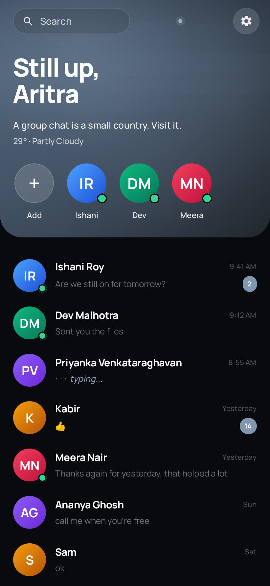
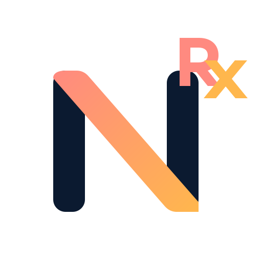

Reduce the static.
Make space for the information and actions that genuinely matter.
Veyra / independent mobile AIOwned by Aritra / not Foresight Labs
Veyra is my independent, experimental Android AI platform—being built around a local-first direction, bounded skills and a clear model-runtime boundary.
[ 01 ] / THE APPROACH
A point of view, translated
into products that earn attention.
I am Aritra Saha, an independent product builder working across Android, Linux, AI systems and data-rich interfaces. Veyra is independently created and owned by me; Foresight Labs is the home for a separate, carefully selected group of products.
↓Make space for the information and actions that genuinely matter.
Privacy-conscious choices and local-first thinking whenever practical.
Every feature begins with a real need, not a metric to inflate.
VEYRA / DESIGN POSITION 001
I’m building Veyra around a simple idea: mobile AI can feel ambitious without pretending to be finished or asking for unlimited access.
[ 02 ] / SELECTED WORK
Fourteen considered projects across mobile, Linux,
network systems, public data and scientific computing.
A curated view of the systems, products and visual instruments I am actively shaping—shown at different scales according to what each project needs.
Independent mobile AI
Veyra is created and owned by Aritra Saha. It is not a Foresight Labs product.
An experimental local-first Android assistant platform exploring safe on-device intelligence, structured responses and carefully bounded skills. It is an early developer platform—not a completed assistant.
Implemented foundations
[ FIELD 01 ] / CURRENT SYSTEMS
Network visibility, software management, communication and public-finance tooling—each grounded in an inspectable system rather than a simulated surface.
Foresight Labs · network observability
A Linux-first network instrument that turns real kernel and packet evidence into understandable live telemetry. Its unprivileged Flutter interface is separated from a Rust engine and narrowly protected capture components.
Independent · Linux developer tool
A provider-aware Linux software manager with explicit planning, confirmation, execution, verification and history. The public beta supports native terminal output and an optional Ratatui interface.

ACTUAL INTERFACE / DEMO DATAForesight Labs · Android communication
A focused Android messenger built on Telegram's official TDLib. Aether puts direct conversation first through its own Compose interface, while preserving Telegram's underlying account, network and security model.
Foresight Labs · public-finance explorer
India's public finances, made visible through official Union Budget and provisional execution data. The current release connects 44 fiscal metrics to explanations, comparisons and inspectable source lineage.
[ FIELD 02 ] / VISUAL INSTRUMENTS
Two live experiments moving between planetary observation and atomic structure.
Planetary situational visualization
A real-time 3D view of Earth in motion—combining line-based geography, current Earth orientation, propagated satellite positions and live aircraft observations in a single interactive instrument.
Atomic physics visualization
An interactive atomic-physics instrument exploring Hydrogen through historical Bohr and modern quantum descriptions—connecting electronic states, probability density, energy levels, spectroscopy and equations in one visual system.
Private cross-device file transfer
A Linux-first continuity application with a GNOME-oriented Flutter interface and independent KDE Connect-compatible interoperability. Relay connects nearby devices and keeps protocol details below one coherent surface.
Editorial intelligence
A modern news and knowledge experience built around curated reporting, focused reading, personal briefings and the things you want to remember.
Planning with presence
A private, offline-first planner for tasks, reminders, repeating schedules and focus sessions—made to make planning feel lighter.
[ FIELD 03 ] / SYSTEMS INDEX
Focused projects that benefit from a compact technical record rather than another full-stage showcase.
Linux intelligence · Bash + Python
Personal weather · Flutter
Personal life intelligence · Flutter

Healthcare prototype · Flutter + Firebase
A SMALL IDEA
SELECT A SIGNAL
CLARITY / 01
Less interface. More understanding. The best interaction is often the one that leaves the user with more attention than it took.Need help with one of these projects, or want to discuss the system behind it? Send a short note with the project name and I’ll get back to you.
Email support↗support_packet.txt
⌘Project name — e.g. Veyra / VYREN / Aether
App version — e.g. 1.0.0
Device + Android version
What happened, and what you expected
Screenshot, if it makes the issue clearer
For your security, never include passwords, PINs, payment information or other sensitive data.